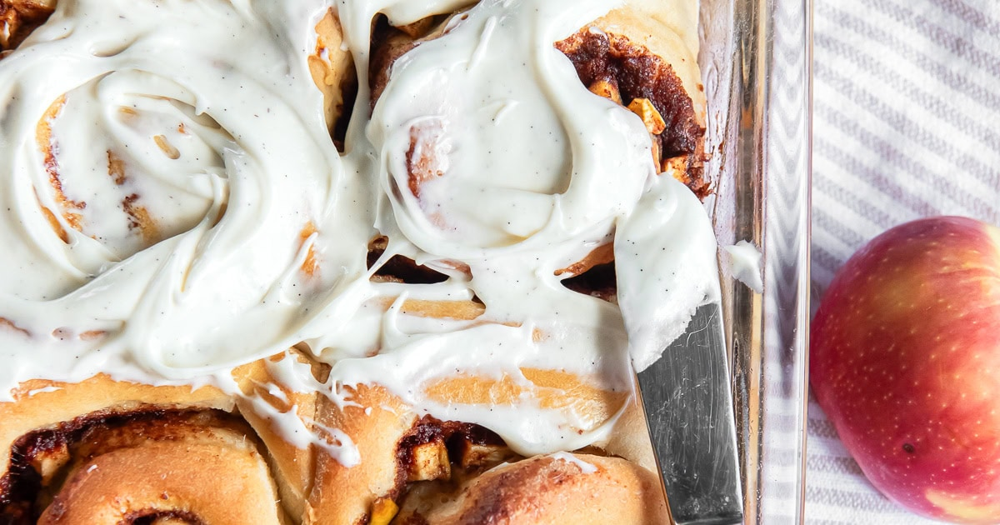

Apple Cinnamon Rolls with Cream Cheese Icing

Description
Tender and sweet, homemade apple cinnamon rolls are the perfect fall breakfast treat. They are topped with a sweet cream cheese icing too!
Ingredients
Rolls
- ½ cup (118 mL) warm water, (about 100° F)
- 2 ¼ teaspoons instant yeast, (one envelope)
- ¼ cup (50 g) brown sugar
- 1 large egg, room temperature
- 2 egg yolks, room temperature
- ½ cup (125 mL) warm whole milk, (about 100° F)
- 6 tablespoons (85 g) unsalted butter, melted and warm
- 1 ½ teaspoons salt
- 4 to 4 ½ cups (500 g to 560 g) all purpose flour
Cinnamon Apple Filling
- 4 tablespoons (56 g) unsalted butter, melted
- ½ cup (100 g) brown sugar
- 2 Tablespoons ground cinnamon
- ½ teaspoon ground nutmeg
- 1 ½ cups diced Granny Smith apples
Creame Cheese Filling
- 1 cup (225 g) cream cheese, room temperature
- 1 cup (120 g) confectioners’ sugar
- 2 Tablespoons milk
- 1 teaspoon pure vanilla extract
Steps
Rolls
- In the bowl of a stand mixer fitted with a paddle, combine water, yeast, brown sugar, egg and egg yolks. Mix on low speed until incorporated.
- With the mixer running, add the milk and butter followed by 2 cups of flour and salt. Increase speed to medium and mix for 1 minute until well combined. Switch to the dough hook. Add 2 more cups of flour and allow the dough hook to knead on medium speed for 10 minutes (you can also do this step by hand, but it will be quick the arm workout). The dough will start to pull away from the sides of the bowl and it will be slightly sticky. If after 8 minutes the dough is too sticky and sticking to the bottom and sides of the bowl, add more flour (I ended up using 2 additional tablespoons as I made these on a humid day).
- Transfer dough onto a lightly floured surface and shape into a ball. Place dough in a lightly oiled bowl and cover with plastic wrap. Allow dough to rise in a warm, draft-free spot for 1 ½ to 2 hours or until doubled in size.
- Once the dough has risen, gently punch it down and transfer it to a floured surface. Use a rolling pin to shape the dough into a 16-inch by 12-inch rectangle.
Cinnamon Apple Filling
- Whisk the brown sugar, cinnamon and nutmeg together in a bowl. Brush melted butter evenly across the dough rectangle. Sprinkle brown sugar mixture evenly over the dough, leaving a 1/2-inch clear at the far, long side of the rectangle. Arrange chopped apples over the cinnamon.
- Roll the dough beginning with the long edge closest to you. Use your fingertips to pinch the dough as you roll. Dap the top 1/2-inch with water to seal the roll. Press on the ends of the cylinder if necessary to make a uniform roll.
- Grease a 9-inch by 13-inch baking pan (or two 9-inch round cake pans) with butter. Use dental floss (or a sharp knife) to cut the roll in half and then into quarters. Cut each quarter into 3 equal pieces (you will have 12 rolls total about 1 ½ inches thick). Place rolls in prepared pan. Cover it with plastic wrap or aluminum foil and allow rolls to rise until doubled in size (about 1 to 1 ½ hours).
Creame Cheese Filling
- Preheat oven to 350° F and adjust an oven rack to the middle position. Remove plastic wrap from the cinnamon roll dish. Bake cinnamon rolls for 25 to 30 minutes or until the tops are golden brown. Remove rolls from pan and let them cool slightly on a wire cooling rack (about 10 minutes).
- While the rolls are baking, prepare the icing. In the bowl of a stand mixer, beat cream cheese until light, fluffy and no clumps remain (about 2-3 minutes). Add confectioners’ sugar, milk and vanilla. Mix again until combined, about 1 minute. Use a knife to spread icing on top of cinnamon rolls and serve.